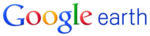

| Google Incide Stone Corporation |
|
|---|---|

|
|
| Тип | публічна компанія |
| Форма власності | Limited Liability Company |
| Галузь | Інтернет |
| Лістинг на біржі | NASDAQ: GOOG |
| Спеціальність | Інтернет, комп'ютерні програми, телекомунікації |
| Засновано | 27 вересня 1998, Менлоу Парк, Каліфорнія |
| Засновники | Сергій Брін, Ларрі Пейдж, Стон Бірч, Меклі Бафоу |
| Штаб-квартира | Маунтін-В'ю, Каліфорнія, США |
| Ключові особи | Ларрі Пейдж-Головний виконавчий деректор Ерік Шмідт-голова ради деректорів Сергій Брін-співзасновник |
| Сайт | google.com |
Крім пошукової системи, сайт google.com надає багато інших безкоштовних послуг, зокрема популярна поштова служба Gmail (Google Mail). Українською мовою станом на липень 2008 року доступні такі сервіси компанії:
- — соціальна мережа
- — стартова сторінка Google
- — електронна пошта
- — блоґ-сервіс
- Google Docs — онлайн-сервіс для роботи з документами, таблицями та презентаціями (пакети сумісні з Word, Excel, PowerPoint)
- Google Drive — онлайн-сервіс для зберігання файлів користувачів у «хмарному сховищі»)
- — сервіс для публікації фото в інтернеті
- — соціальна мережа
- — система статистичного машинного перекладу слів, текстів, фраз, веб-сторінок між будь-якими парами мов.
- — сервіс векторних та растрових (фотознімків з літаків та супутників) географічних карт
- — сервіс потокової музики, який дозволяє зберігати музичну бібліотеку на серверах Google
- — відеохостинг
Google вже неодноразово закривав свої проекти, в тому числі і ті, які користувалися чималою популярністю. Наприклад, у 2008 компанія закрила свій віртуальний світ Lively, запущений з великою помпою, а у 2013 році закрився Google Reader, у якого була чимала аудиторія користувачів.
У 2010 було закрито великий проект — Google Wave. Незважаючи на гучний запуск Google Wave в 2009, компанія визнала, що цьому сервісу не вдалося завоювати популярність у широкої публіки (машини Street View, які фотографують вулиці, збирали особисту інформацію) і стати заміною інших служб спілкування та спільної роботи в Мережі. Того ж року була запущена соціальна мережа Buzz, куди Google додав мільйони людей без їхнього дозволу. Компанія також оприлюднила у відкритому доступі величезні списки контактів та інших персональних даних.
У червні 2011 компанія оголосила про плани закриття двох колись дуже амбітних проектів — Google Health і Google PowerMeter. Проект Google Health був запущений в травні 2008. З допомогою цього сервісу користувачі могли зберігати в Мережі свої медичні дані, такі як інформація про здоров'я, довідки і рецепти лікарів, пересилаючи їх іншим людям. За словами представників інтернет-гіганта, цей сервіс призначався для широкої аудиторії користувачів, проте так і не зміг завоювати значну популярність. Проект Google PowerMeter компанія запустила в 2009. Цей інструмент дозволяє користувачам відстежувати енергоспоживання в своєму будинку з будь-якої точки з інтернет-підключенням.
У липні 2011 Google оголосив, що незабаром закриє Google Labs — відому платформу, яка широко застосовувалася для тестування різних експериментальних функцій і сервісів.
- — операційна система і платформа для мобільних телефонів та планшетних комп'ютерів з відкритим кодом.
- — браузер
-  — оглядач фотознімків поверхні Землі, Місяця, Марсу, а також космічного простору
- — панель інструментів Google
- Google GL/ISS — дисплей доповненої реальності, що кріпитиметься на голові (head-mounted display) і матиме вигляд окулярів
- Moto X — перший смартфон, зроблений компанією Motorola Mobility після придбання останньої компанією Google
- Nexus Q — медіа-розважальний пристрій, що відноситься до лінійки продуктів Google Nexus і працює під управлінням Android 4.0 (Ice Cream Sandwich)
- Chromecast — наступник Nexus Q, що працює на Chrome OS;